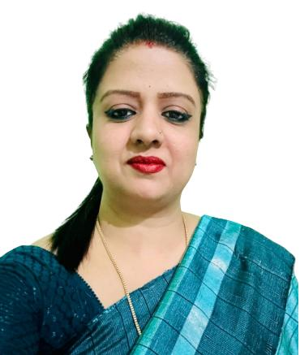

What is really needed to make democracy function is not knowledge of facts, but right education
~ MK Gandhi Ji
Education is what enlightens. Edification is what empowers, and we empower to make impact. When proficiency is collocated and endorsed commensurate to its merit, and the veracity of the capaciousness in the intellectual imperative of students is realized, it is borne upon any institution to step beyond confines of brick and mortar. To conceive, consider and counsel that which regards the world as a concord of fraternity instils the arts that keep the strings of world governments together, to this date. A ubiquitous art of the nature of debate and deliberation is distilled into characters of negotiation and diplomacy, one of pre-eminence and superlative to others; one that the leaders of tomorrow ought to imbibe.
The conference that our institution will host testifies to how, with every word of a speech delivered, with every clause of a resolution passed, and with every question raised in a room full of intellectuals, we engender change imparted to our students; crucibles that carry the faculty that accords us respite whenever crises loom and disputes arise that warrant well-thought and complex solutions.
The Delhi Public Society has always rendered itself to the tenet ‘Service before Self,’ and as has been committed to history, the highest service is to dedicate oneself, to the promulgation of a cause, and initiatives like these catalyse impact in the minds of youth. God Almighty’s providence be upon us all.
Dr Ram Singh
Principal
DPS Ranchi

MUN Coordinator
DPSRMUN, as much of a conference, is an investiture of diplomacy, where diplomats to be gather in congression, under the insignia of diplomacy that is sought to be tempered to the best of us all.
Debates, mock parliaments and MUNs are not elite bearings on global statements and declarations made in capacity of our collective international destiny. Rather, they appeal to a fundamental propinquity of us to question, to deliberate and to discuss. When the critical faculty of us as people is poised at agendas of global concern; it fastidiously transcribes itself into a set of procedures that constitute an MUN.
Diplomats, an MUN conference accommodates diverse portfolios of many institutions, those dealing with Indian Polity all the way to Journalism and Global Crises. It is where your opinions and perspectives find platform, podium and pulpit. It empowers you to analyse and inquire into the governance of world affairs, and to enthuse your fundamental inquisitive nature into affairs of global concern.
And there this is; a cordial invite to every student who believe that they have something to contribute to a constructive decision that fosters collective harmony
Warm regards,
Lily Kumar
MUN Coordinator
DPS Ranchi
Secretary General
Dear distinguished delegates,
I receive with elation the pleasure of bringing to you, the first edition of DPSRMUN. The first edition of any event is always the maiden voyagè. As an event under the aegis of one of the most distinguished schools in the state, the school administration and the Contant Us is committed to making this event a superlative of its kind. We will be open to providing any and all assistance that the delegates may require.
We have seen unprecedented global events, where world politics have fomented conflicts, but these times are also the epoch of human cooperation, and therein lies the timeless appeal of the arts of debate, negotiation and resolution drafting.
We expect delegates, deliberating on the world's most pressing issues, tirelessly labouring to draft resolutions, lobby fellow delegates, and relentlessly scrutinise opposing blocs. The current state of world affairs and international relations needs creative young thinkers who strive to ameliorate the world. With this in mind, the team of DPSRMUN has accumulated and put forward some captivating agendas that we believe will generate fruitful and constructive discussions.
DPSRMUN welcomes experienced delegates who will strive to build consensus as well as rookies looking for exposure. This conference is a premise of learning, for you as delegates, we as organizers and us as a whole of erudition.
Let the inner diplomat within you come out and deliberate upon global issues throughout a weekend full of debate and negotiations.
Warm regards,
Lily Kumar
Secratary General of DPSRMUN 2024